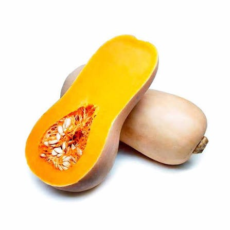
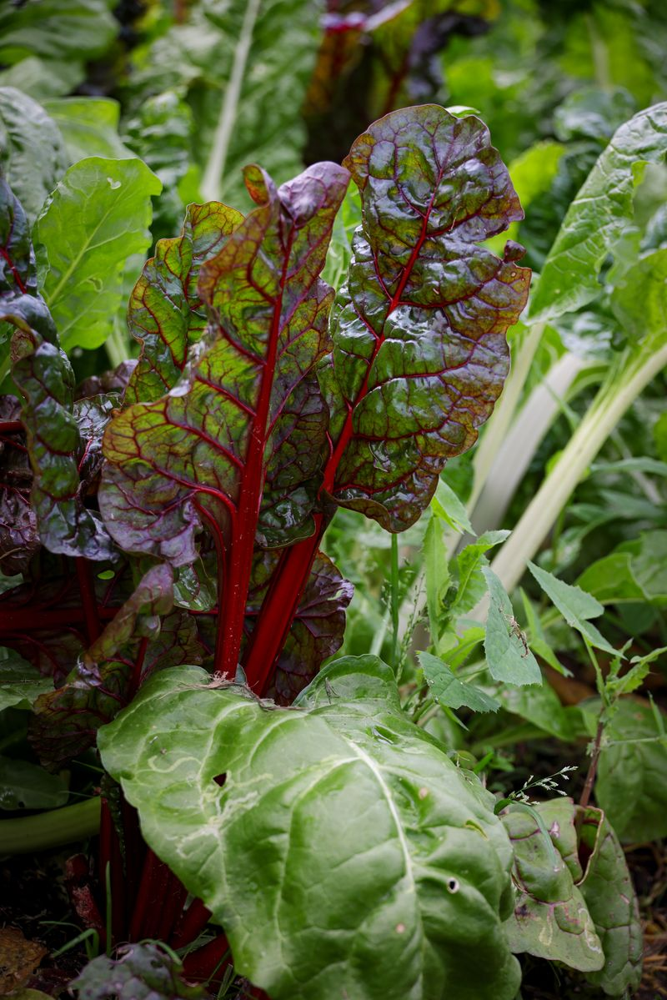
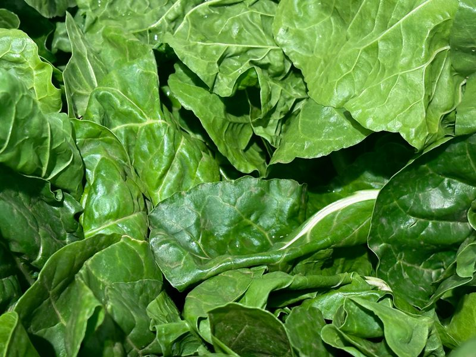

Un sistema de riego automatizado con ESP32, sensores de humedad y recolección de agua de lluvia, pensado para producir alimentos frescos y compartirlos con familias de la comunidad educativa.
Faltan para la presentación de la Huerta Escolar.
Diseñar y construir una huerta que riegue sola cuando la tierra lo necesita, priorizando el agua de lluvia por sobre la red escolar, para aplicar en un problema real los conocimientos de electrónica, programación y automatización de la Especialidad Informática — y destinar la producción de zapallo, acelga y espinaca a familias de la comunidad educativa.
La huerta está techada, así que la lluvia no llega directo a la tierra: por eso el riego lo decide un sistema automático y no el clima. Así es como trabajan sus tres partes.
Cada pocos segundos la ESP32 lee los tres sensores de humedad de suelo (uno por zona), convierte esa lectura en un porcentaje y compara el valor contra dos umbrales fijos. Si hace falta regar, pone en LOW el pin del relé (lógica inversa) y ese relé cierra el circuito de 12V que enciende la bomba durante un tiempo controlado.
Trabajar con dos umbrales distintos (histéresis) evita que la bomba se encienda y apague todo el tiempo cuando la humedad ronda un único valor.
Como el techo de la huerta impide que la lluvia moje la tierra, el sensor FC-37 no participa en la decisión de regar: se instala afuera, inclinado a 45° para que el agua escurra rápido, y su única tarea es detectar precipitaciones para armar un historial climático.
El sistema es dual: la bomba toma agua del tanque en todos los casos posibles, y solo se habilita la conexión a la red de la escuela cuando esa fuente no alcanza.
Se llena con canaletas de PVC que bajan el agua del techo de la escuela. Es la fuente que usa la bomba en el uso normal del sistema, todos los días que haya agua disponible.
Conectada por una cañería de PVC de 1/2" con llave de paso manual. Solo se recurre a ella cuando el tanque de lluvia se vacía o hay sequía prolongada, nunca en primer lugar.
Cada cantero tiene su propio sensor de humedad de suelo. Tocá una tarjeta para ver una lectura simulada.

Cultivo de mayor porte, ubicado en el sector con más espacio disponible de la huerta.

Hoja verde de ciclo corto, con riego por goteo de infiltración lenta cada 15–20 cm.

Sensible a la sequía: es la zona que más rápido activa el riego automático.
La lectura se simula en el navegador a modo ilustrativo — no proviene de un sensor real.
Calculado en el navegador a partir de los datos cargados en "Especies cultivadas" (también se imprime por consola).
Marcá cada tarea a medida que se completa para llevar el seguimiento del armado de la huerta.